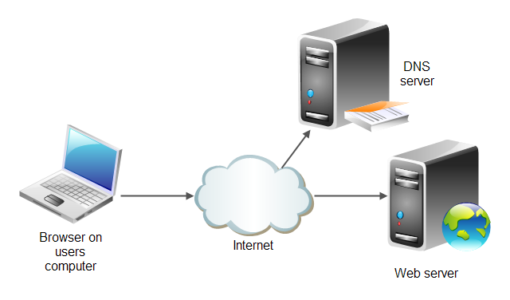

Web sunucusu, Hosting ya da "barındırma" işlemini İnternet protokolü üzerinden sunan bir sunucudur. Barındırma ya da hosting, Web sayfalarını İnternet'te yayınlamak için gerekli alanın kiralanmasıdır. Diğer bir ifade ile hosting, bir Web sitesinde yayınlanmak istenen sayfaların, resimlerin veya dokümanların İnternet kullanıcıları tarafından erişebileceği bir bilgisayarda tutulmasıdır.
Bir Web sitesi kurmak için dosyaların saklanacağı bilgisayar bir ev bilgisayarı olmamalıdır, çünkü gerekli program ve donanımı olsa bile İnternet bağlantısının veri yükleme hızı (upload) bu iş için genelde yetersizdir. İnternet'te site yayınlamak için özel olarak üretilmiş, İnternet'e hızlı bağlantısı olan, yüzlerce kullanıcıya aynı anda hizmet verebilecek bir bilgisayarda (server, yani sunucu) dosyaların saklanması gerekir. Web sitesine ait dosyalar için depo vazifesi gören ve İnternet kullanıcılarının erişimine sunan bilgisayarlara Web sunucusu (web server), bu veri saklama ve yayınlama işlemine de Web hosting denir.
"Platform" sunucu üzerinde kullanılan Linux, MacOS, Microsoft Windows, UNIX gibi işletim sistemleri için kullanılan bir terimdir. En basit anlamda, sunucu üzerinde çalışan ve donanım ile diğer tüm servislerin yönetimini sağlayan işletim sistemidir. Sitede ihtiyaç olan yazılımlara göre kullanılmasını gerektiren işletim sistemi de değişecektir. Sitede sadece HTML dosyaları kullanılacaksa Windows veya Unix sistemleri fazla bir fark taşımaz. Günümüzde Windows ve yeni bir UNIX formu olan Linux platformları en çok kullanılan server sistemleridir. Eğer sitede ASP, FrontPage, MS SQL, Access veya başka Microsoft ürünleri kullanmak isteniyorsa, Windows tabanlı hosting kullanılmalıdır. Eğer sitede PHP, MySql, CGI veya Perl kullanmak isteniyorsa UNIX hostlar daha çok tercih edilmektedir. UNIX sistemi Windows sistemine göre genellikle daha ucuz ve stabildir. Güvenlik açısından UNIX, kullanım ve kurma kolaylığı açısından Windows tercih edilir. Sunucunun sahip olduğu donanım da oldukça önemlidir. İşlemci, disk, hafıza, ağ kartı gibi ayrıntıları gözeterek, mümkün olan en uyumlu ve hızlı donanımı hedeflenmelidir. Eğer güvenliğe önem veriliyorsa Firewall, yani siteye yapılacak saldırıları önlemeye yarayan donanımı da tercih edilmelidir.